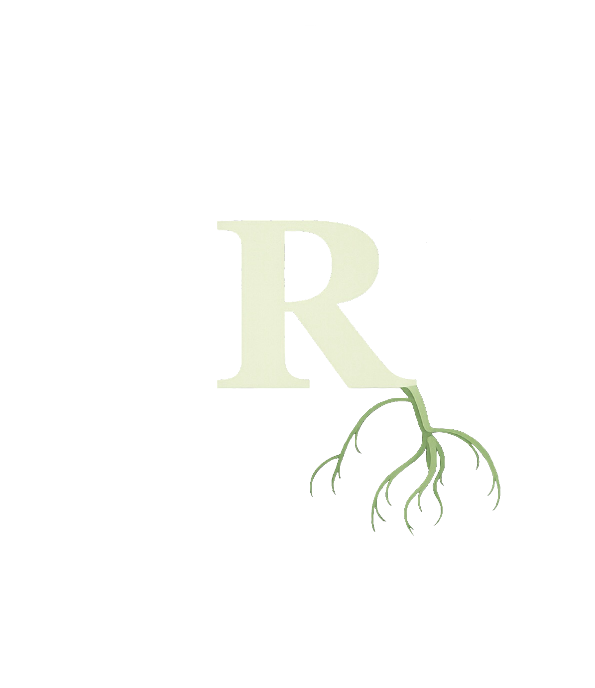
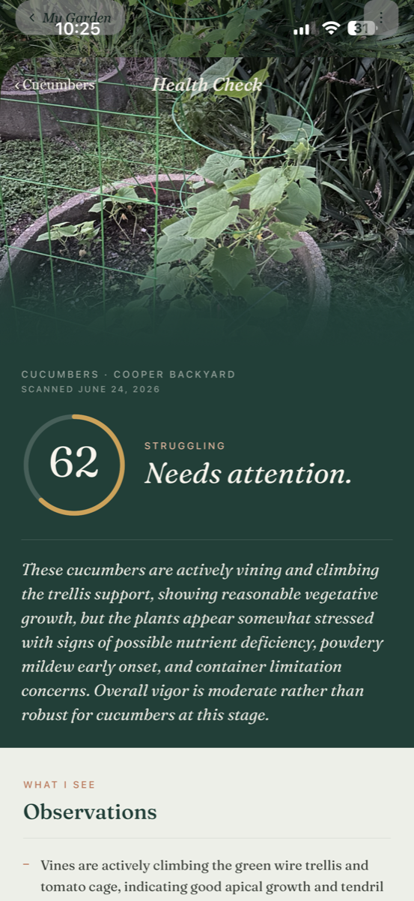
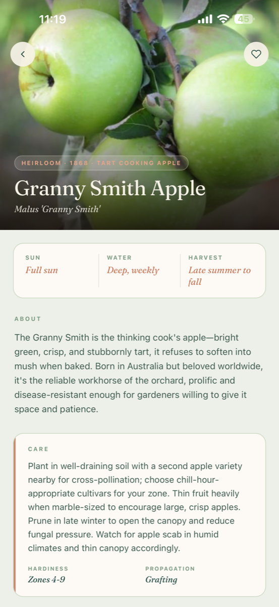
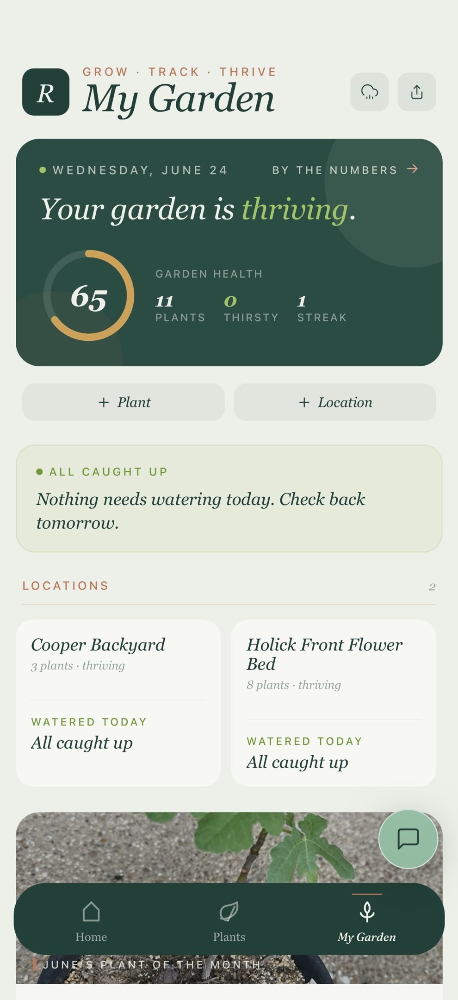
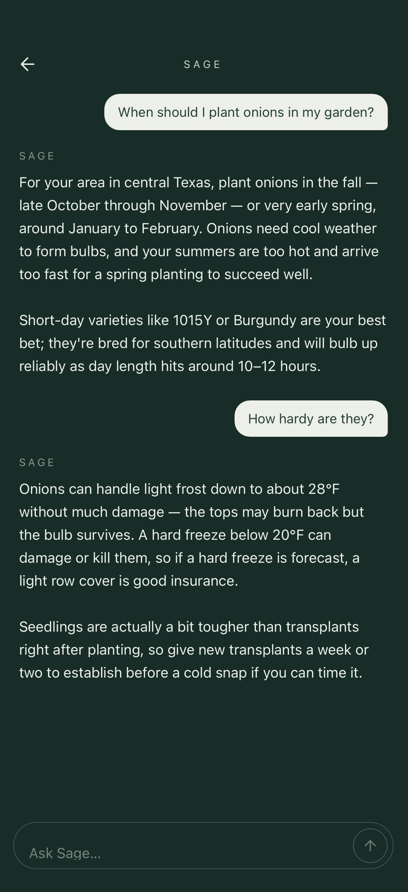
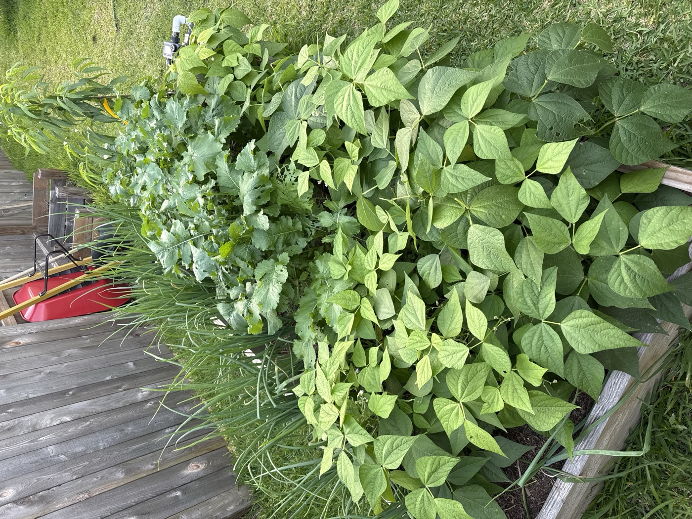
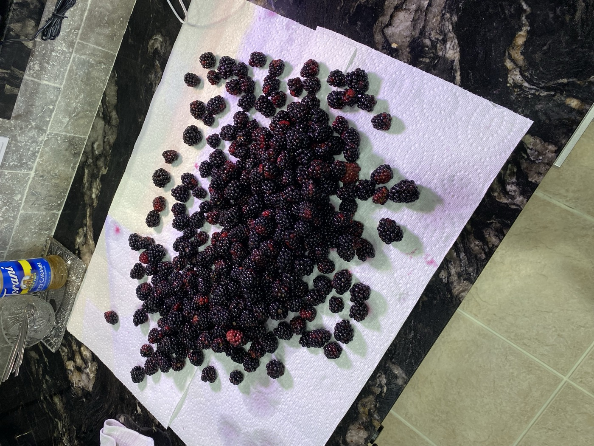
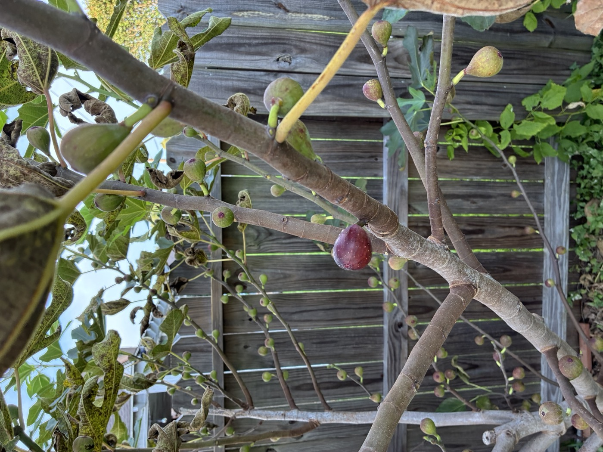
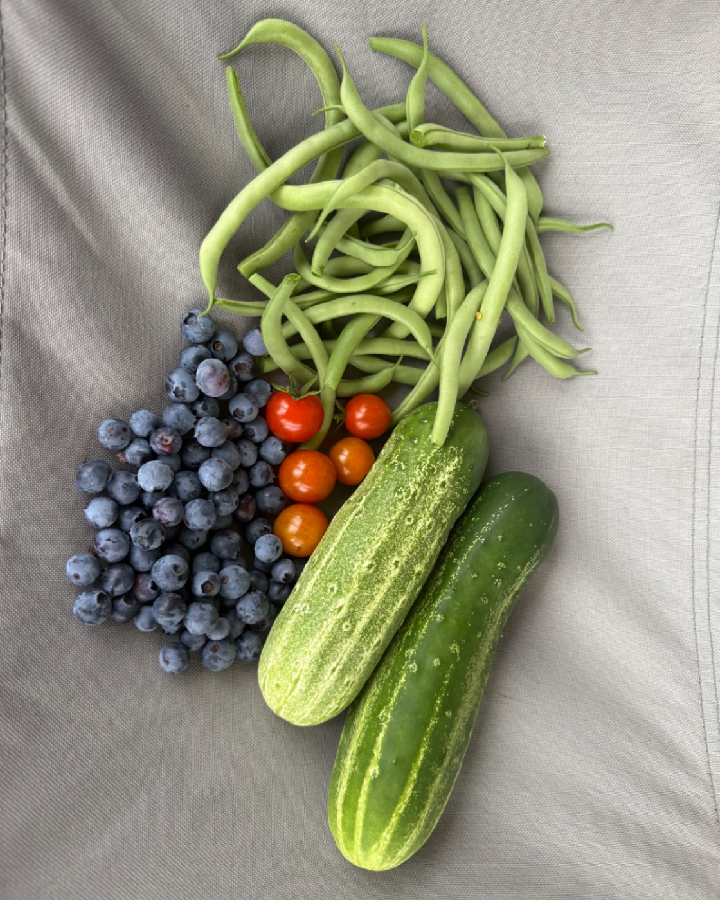

Now on the App StoreKnow your roots.
Grow your garden.
The garden companion for people who actually grow food — outdoors, in beds, in the ground.

Now on the App StoreThe garden companion for people who actually grow food — outdoors, in beds, in the ground.
Rooted is built for the vegetable garden — the raised beds, the tomatoes, the harvest. Real growing, done well.
Snap a photo of a struggling plant and get an instant health read — what's wrong, why, and exactly what to do about it. Powered by AI trained on the problems real gardeners face.

Rich, editorial guides for what you grow — planting windows, care, companions, and harvest timing. Less encyclopedia, more field guide worth reading.

Every bed, every plant, every task — organized by where things grow. See what needs you today, keep your streak, and watch the whole garden thrive at a glance.

Sage knows your garden and answers like a friend who's grown it all — when to plant, why leaves are yellowing, what to do this weekend. Ask anything.

Rooted is made for the gardeners actually out there — hands in the dirt, watching it come up, bringing it in.




Track, grow, and harvest with Rooted.
Free to download. Grow like you mean it.